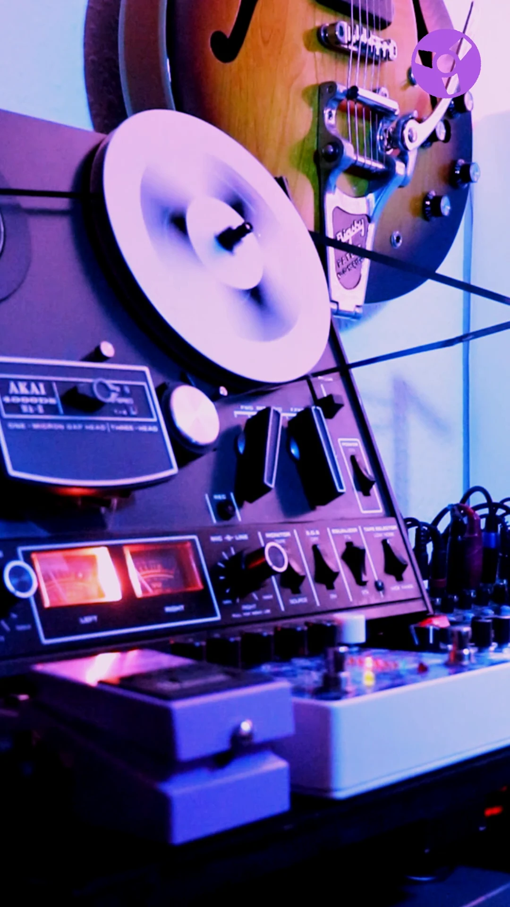

01 / Focus
An unobtrusive backdrop for study, ADHD focus, creative work and late-night coding.

FRS means Focus • Relax • Sleep: slowly evolving ambient music to help you concentrate, unwind or settle down for the night. A quieter background for work, coding and rest.
The listening room
One soundscape. Different moments. The same recording can accompany focused work, a quiet evening or bedtime. Choose by the sound and atmosphere you enjoy.
For busy minds, quiet evenings and everything in between. Put it on while reading, studying, making something or coding late into the night. If you have ADHD and find steady background sound helpful, try it during focused work or as part of your wind-down routine.
An unobtrusive backdrop for study, ADHD focus, creative work and late-night coding.
The same music can help you slow down, unwind and leave the noise behind.
Let familiar, gently evolving soundscapes accompany bedtime and overnight rest.
From listening to creating
In developmentMake space for your own soundscapes. DRONE MACHINE, the first instrument in The Sound Factory, brings four tracks of tape-loop exploration into a creative software environment.
Capture. Degrade. Transform. Collide. Discover.
Explore The Sound Factory →